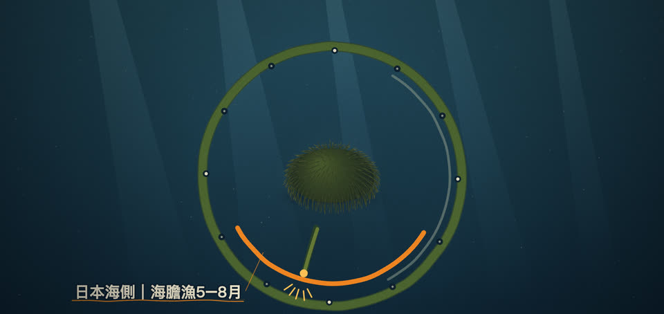
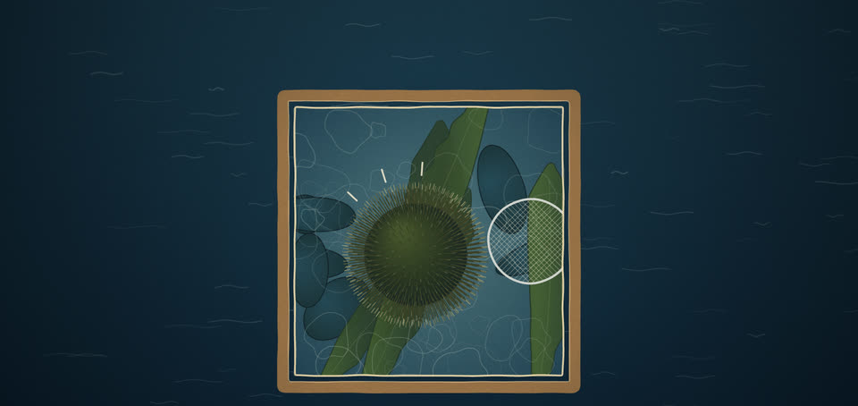
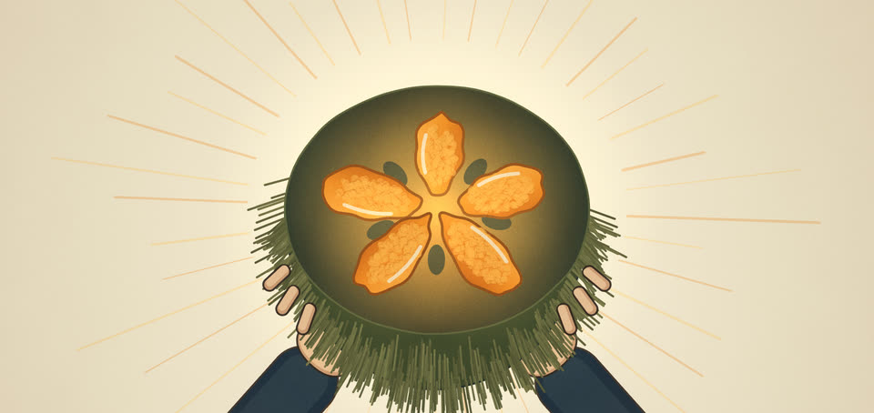
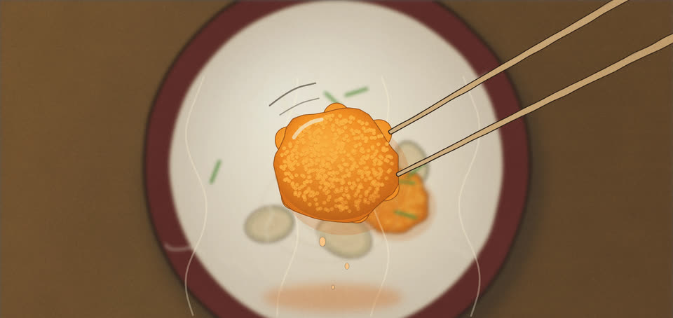

因為海膽殼裏能吃的，只有那幾瓣生殖巢。1,2,3這一頁跟着一粒北海道的蝦夷馬糞海膽，看那幾瓣怎樣長成、被撈起、打開，送到你面前。
產地：吃昆布長大的海膽
我吃的北海道海膽，究竟是哪一種、吃甚麼長大？
北海道廳的漁業圖鑑這樣介紹禮文島香深的生海膽：吃利尻昆布長大的蝦夷馬糞海膽。4
同一份圖鑑介紹散布漁協的海膽時也寫道：因為吃天然昆布長大，身塞得滿滿。4北海道廳的圖鑑寫道：海膽雜食，吃甚麼會改變牠本身的味道；據說吃利尻昆布或羅臼昆布長大的蝦夷馬糞海膽，味道特別好。專欄形容禮文島・利尻島一帶，以寒冷嚴峻海流中長成的優質昆布為食的海膽，肉質緊實、沒有雜味，甜味清澈而濃厚。5
從北邊的利尻・禮文、積丹，到鄂霍次克海一側的羅臼，再到太平洋岸的室蘭、廣尾，北海道廳圖鑑的分布圖幾乎畫滿了整條海岸線。4牠們棲息在潮間帶至水深50米的岩礁。牠的殼像饅頭，棘只有5至7毫米長。6
在北海道，牠可活約10年，殼徑可長到約10厘米。7北海道廳形容牠的「身」以鮮豔的橙色為特徵；市場上也因剝身的顏色，把牠叫作「赤」，北紫海膽則叫作「白」。2,4稻荷的核心海膽品種就是牠，學名 Strongylocentrotus intermedius，屬大馬糞海膽科。6
同樣是蝦夷馬糞海膽，在北海道不同的海岸，捕撈的月份並不相同。4
季節：拆開「旬」這個字
北海道海膽甚麼時候當造？為甚麼不同產區會不一樣？

海膽殼裏生殖巢佔體重的比例，行內叫「身入り」；水產研究・教育機構刊載的一項宮城縣北紫海膽研究註明，由春到夏，這個比例會由10%增加到30%。8同一項宮城縣的研究也發現，海藻越多，生殖巢指數增加越大；改以昆布類餵飼品質差的海膽，身入り會增加，顏色轉向偏黃。道漁連旗下銷售公司的專欄有說法指：海膽在產卵前為儲存營養大量吃昆布，那時身長得飽滿，甜味和鮮味凝縮，這就是「旬」的真面目。5
而北海道廳的資料顯示，蝦夷馬糞海膽的產卵期本身就因海域而大不相同：津輕海峽西部至北部日本海是9至10月，鄂霍次克海是8至9月，根室海峽至日高以東的太平洋是6至10月，噴火灣至津輕海峽東部則每年有兩次，在4至6月和9至10月。4北海道漁業協同組合連合會列出的海膽漁時期，像接力一樣按地區輪替：日本海側5月至8月，羅臼2月至5月，雄武・枝幸4月至6月，襟裳1月至3月。5,9北海道廳的圖鑑亦記錄，羅臼的蝦夷馬糞海膽漁由1月中旬做到6月末；根室歯舞的海膽，則在可食部分成熟的嚴冬時捕撈。
夏天輪到利尻：利尻町官網寫明，當地北紫海膽的漁期是6月至9月，蝦夷馬糞海膽是7月至8月。10隔鄰禮文島的香深漁業協同組合在2022.05公布，當年的蝦夷馬糞海膽漁在6月1日解禁，預計做到8月左右。11同在渡島，北紫海膽的漁期也各有不同：北海道廳圖鑑列出戸井漁協是1月至3月，松前さくら漁協是4月末至8月上旬。12
北紫海膽的時間表又不一樣：北海道廳指出，牠的生殖巢在6至8月發育至高峰，產卵期在其後的9至10月左右。12
各產區的漁期和旬期整理在下表；兩者來源不同，分開兩欄。
圖例漁期（上岸）食味最佳期市場有貨
| 地區 | 種類 | 1 | 2 | 3 | 4 | 5 | 6 | 7 | 8 | 9 | 10 | 11 | 12 | 月份 |
|---|---|---|---|---|---|---|---|---|---|---|---|---|---|---|
| 蝦夷馬糞海膽 | ||||||||||||||
| 利尻 | 漁期（上岸） | 7、8月 | ||||||||||||
| 禮文島香深 | 漁期（上岸） | 6–8月（2022年） | ||||||||||||
| 羅臼（羅臼漁協） | 漁期（上岸） | 1–6月 | ||||||||||||
| 渡島 | 漁期（上岸） | 12–9月 | ||||||||||||
| 石狩・後志 | 漁期（上岸） | 5–8月 | ||||||||||||
| 宗谷 | 漁期（上岸） | 4–9月 | ||||||||||||
| 根室 | 漁期（上岸） | 12–6月 | ||||||||||||
| えりも | 市場有貨 | 1–4月 | ||||||||||||
| 北紫海膽 | ||||||||||||||
| 利尻 | 漁期（上岸） | 6–9月 | ||||||||||||
| 戸井（渡島） | 漁期（上岸） | 1–3月 | ||||||||||||
| 松前（渡島） | 漁期（上岸） | 4–8月 | ||||||||||||
| 渡島 | 漁期（上岸） | 12–9月 | ||||||||||||
| 石狩・後志 | 漁期（上岸） | 5–8月 | ||||||||||||
| 宗谷 | 漁期（上岸） | 4–9月 | ||||||||||||
| 北海道 | 食味最佳期 | 6–8月 | ||||||||||||
| 全品種通用 | ||||||||||||||
| 日本海側 | 漁期（上岸） | 5–8月 | ||||||||||||
| 羅臼（道漁連） | 漁期（上岸） | 2–5月 | ||||||||||||
| 雄武・枝幸 | 漁期（上岸） | 4–6月 | ||||||||||||
| 襟裳 | 漁期（上岸） | 1–3月 | ||||||||||||
| 青森縣南部 | 食味最佳期 | 7月 | ||||||||||||
| 湧別（サロマ湖） | 市場有貨 | 4–6月 | ||||||||||||
表格可左右滑動
漁期一開，漁民就趁清晨出海，從船上望向海底。14
採捕：從方框望下去
海膽是怎樣從海底撈上來的？吃甚麼真的會改變味道嗎？

北海道漁業協同組合連合會2012年的報道記錄了忍路港的做法：海膽漁限定在清晨6時至9時，漁民在船上用專用的眼鏡搜尋海底的海膽。14找到之後，再用「ヤス」和「たも」等長柄工具，把海膽逐隻鈎起。眼鏡望下去的那個方框，就是漁民看海底的窗口。
海膽也不全是天然長大：北海道立綜合研究機構介紹，北海道自昭和57年起研究人工採苗，現時各地設有種苗生產設施，每年放流約6千萬個種苗。7這些種苗約2至5年後由漁民捕獲，若在漁場存活良好，回收率約30%至40%。北海道廳的圖鑑說，海膽吃甚麼，味道就會跟着變。4
三浦半島因「磯燒」要驅除的紫海膽，因為缺乏海藻、生殖巢不飽滿，研究人員改用當地未能出貨的規格外椰菜，在4月至6月約3個月間把牠們養成可食用的海膽。15,16水產廳資料記錄，水溫回升的4月之後，200個紫海膽在3日內吃光了3個椰菜。
結果如何？神奈川縣的報告說，只吃椰菜長大的紫海膽甜味強、苦味幾乎消失，也沒有海藻帶來的磯臭味。16
處理：明礬木箱與塩水包
一隻海膽怎樣變成一盒？為甚麼有些用明礬、有些泡塩水？

殼打開之後，取出的是生殖巢。2,3《市場魚貝類圖鑑》這樣描述箱裝的蝦夷馬糞海膽：把剝出的生殖巢先浸過明礬，再排進木箱；壽司店多用這種。為甚麼要用明礬？日本厚生勞動省說明，明礬可作「形狀安定劑」，用於防止海膽、水母等型崩。17不過圖鑑也提到，帶殼的活海膽因為沒有經過明礬，沒有明礬的苦味，吃得到海膽本身的味道。
北海道漁業協同組合連合會指出，市面流通的海膽有裝盒的折裝海膽、為防止食味變差而用塩水包裝的海膽，以及瓶裝海膽。9道漁連旗下銷售公司的專欄說，折裝海膽由師傅排得整齊，料亭和壽司店也用，但接觸空氣的面積大、容易乾，保存期相對短。5塩水海膽則不同：浸在殺菌處理過的海水中包裝，保持接近剛捕獲時的鮮度。
北海道廳圖鑑介紹的香深漁協塩水海膽，不用着色料和添加物，只用滅菌處理過的海水包裝，捕獲當日發送。4保存方面，群馬縣根據日本《食品、添加物等の規格基準》整理的保存基準寫明：生食用的切身或剝身鮮魚介類，須放入清潔衛生的容器包裝，並在攝氏10度以下保存。18名字上也有講究：據《數碼大辭泉》，「雲丹」（亦寫作「海胆」）指的正是海膽的生殖巢，可以生吃，也可做成練りうに等加工品。3
在日本，海膽的鹽漬品「越前塩うに」曾被列為三大珍味之一，與三河的このわた、肥前的からすみ並列。1
它的歷史可追溯到奈良時代：平城京出土的木簡上，記載了海膽是若狹國三方郡的進獻品。1現行製法確立於江戶時代後期，由福井藩的「天王屋」第三代受藩主松平治好之命，為開發戰時可久存的貯藏食而創製。做法是取出生殖巢、以海水清洗、撒鹽脫水乾燥，練成膏狀後熟成；熟成期因製造商而異，由短時間到1至3年都有。主要產地福井縣坂井市三國町，每年由7月21日起約1個月進行海膽漁，由當地海女捕撈。
盒子到了廚房，海膽還可以做成一道湯。13
料理與搭配：乳白湯裏的野莓
除了生吃，海膽還可以怎樣煮、配甚麼？

在青森縣南部，八戶市、階上町一帶的太平洋沿岸，流傳着一道用海膽和鮑魚煮成的清湯，叫「いちご煮」。13
名字很詩意：鮑魚的精華令湯汁變成乳白，浮在上面的金黃色海膽，看來就像晨露中朦朧可見的野莓。13
相傳它起源於漁民把潛水捕得的海膽和鮑魚在海邊豪邁地煮食，到了大正時代，才成為料亭盛在碗中款客的料理。13現在它是婚禮等喜事不可缺少的料理；在當地，盂蘭盆節、新年和喜慶場合必定會做。當地相傳「青紫蘇長出來的時候，海膽就好吃」，海膽約在7月當造。日本農林水產省收錄的做法，約5人份用生海膽200克、大鮑魚1個、青紫蘇5片；湯滾後即熄火，因為煮得太久海膽會變硬。
圖鑑亦提到，帶殼用大火蒸5分鐘的蒸海膽，海膽的風味明顯變強。2至於壽司店常見的軍艦卷，據說是昭和16年東京銀座「久兵衛」的主人，應常客想吃鮭魚子（いくら）壽司的要求而構思的。19做法是在握好的醋飯側面圍上紫菜，再放上鮭魚子（いくら）、海膽等容易散開的食材。
いちご煮盛碗後，會放上白髮蔥絲和青紫蘇。13鹽漬的越前塩うに，據說和日本酒十分相配，一般直接吃，或放在白飯上吃。1
那一瓣海膽裏，到底有多少蛋白質、多少脂肪？20
食用：入口之前
海膽的營養是怎樣的？買回家要怎樣保存？
生海膽也含一定脂肪：根據日本文部科學省的食品成分資料庫，每100克可食部分含蛋白質16.0克、脂質4.8克。20
同一資料庫列出，每100克的熱量是109大卡，膽固醇290毫克。20日本的販售法規要求生食用剝身鮮魚介類在攝氏10度以下保存（群馬縣根據《食品、添加物等の規格基準》整理），買回家後也可以此為參考。18我們查不到的：開盒後能放幾天、怎樣吃才對味、配甚麼酒——目前沒有可靠來源，所以不寫。
常見問題
北海道海膽甚麼時候當造？
馬糞海膽和北紫海膽有甚麼分別？
海膽為甚麼會加明礬？有苦味嗎？
塩水海膽和木箱（明礬）海膽有甚麼分別？
北海道海膽為甚麼甜？
北紫海膽甚麼時候當造？
北紫海膽的時間表又不一樣：北海道廳指出，牠的生殖巢在6至8月發育至高峰，產卵期在其後的9至10月左右。12北海道廳公布的北紫海膽漁獲時期：渡島12月至翌年9月，石狩・後志5月至8月，宗谷4月至9月。北紫海膽的禁漁期各地不同：宗谷管內是10月1日至31日，十勝・釧路・根室管內是7月15日至9月30日，其他海域是9月15日至10月31日。
「雲丹」和「海膽」有甚麼分別？
名字上也有講究：據《數碼大辭泉》，「雲丹」（亦寫作「海胆」）指的正是海膽的生殖巢，可以生吃，也可做成練りうに等加工品。3
海膽除了生吃還可以怎樣煮？
在青森縣南部，八戶市、階上町一帶的太平洋沿岸，流傳着一道用海膽和鮑魚煮成的清湯，叫「いちご煮」。13名字很詩意：鮑魚的精華令湯汁變成乳白，浮在上面的金黃色海膽，看來就像晨露中朦朧可見的野莓。日本農林水產省收錄的做法，約5人份用生海膽200克、大鮑魚1個、青紫蘇5片；湯滾後即熄火，因為煮得太久海膽會變硬。
生海膽買回來怎樣保存？
軍艦卷是怎樣來的？
至於壽司店常見的軍艦卷，據說是昭和16年東京銀座「久兵衛」的主人，應常客想吃鮭魚子（いくら）壽司的要求而構思的。19做法是在握好的醋飯側面圍上紫菜，再放上鮭魚子（いくら）、海膽等容易散開的食材。
澳門哪裏有北海道海膽？
稻荷是澳門第一家專門提供海膽的供應商。由日本到澳門的冷鏈約48小時，以IoT溫度傳感器全程監控（2-5°C）。稻荷環球食品的前身「太平洋」自1999年起經營，2012年稻荷環球食品成立。
來源
- 越前塩うに（にっぽん伝統食図鑑） — 農林水産省
- エゾバフンウニ — 市場魚貝類図鑑
- うに【海胆／海栗】（デジタル大辞泉） — コトバンク
- エゾバフンウニ（北海道お魚図鑑） — 北海道庁 水産林務部
- 北海道産ウニの旬カレンダー＆産地別の味わい徹底ガイド（通販コラム） — ぎょれん販売株式会社 直販部（北海道漁業協同組合連合会グループの販売会社）
- エゾバフンウニ（稚内水産試験場 魚の知識） — 北海道立総合研究機構 稚内水産試験場
- ウニの種苗生産と放流 — 北海道立総合研究機構 水産研究本部
- 品質（色と身入り）のよい生ウニをつくろう（平成14年度水産研究成果情報、宮城県気仙沼水産試験場） — 国立研究開発法人 水産研究・教育機構
- 北海道のさかな うに（産地と旬） — 北海道漁業協同組合連合会（北海道ぎょれん）
- 利尻町の産業（利尻こんぶを食べて育つウニ） — 利尻町
- 「エゾバフンウニ漁」6月1日解禁（2022年5月31日掲載） — 香深漁業協同組合（北海道礼文島）
- キタムラサキウニ（北海道お魚図鑑） — 北海道庁 水産林務部
- いちご煮 青森県（うちの郷土料理） — 農林水産省
- 浜通信ひと・くらし 2012年07月（忍路港） — 北海道漁業協同組合連合会（北海道ぎょれん）
- 磯焼け対策協議会資料（神奈川県水産技術センター キャベツウニ） — 水産庁
- キャベツウニ — 神奈川県
- アルミニウムに関する情報（用途） — 厚生労働省
- 食品衛生法において保存方法の基準が定められている食品（「食品、添加物等の規格基準」を基に作成） — 群馬県
- 軍艦巻き（語源由来辞典） — 語源由来辞典
- 食品成分データベース うに 生うに — 文部科学省 食品成分データベース
B2B 採購查詢
稻荷環球食品的前身「太平洋」自1999年起經營，2012年稻荷環球食品成立。稻荷是澳門第一家專門提供海膽的供應商。由日本到澳門的冷鏈約48小時，以IoT溫度傳感器全程監控（2-5°C）。稻荷環球食品｜前身1999年起經營
酒店及餐廳採購查詢：+853-6282-3037